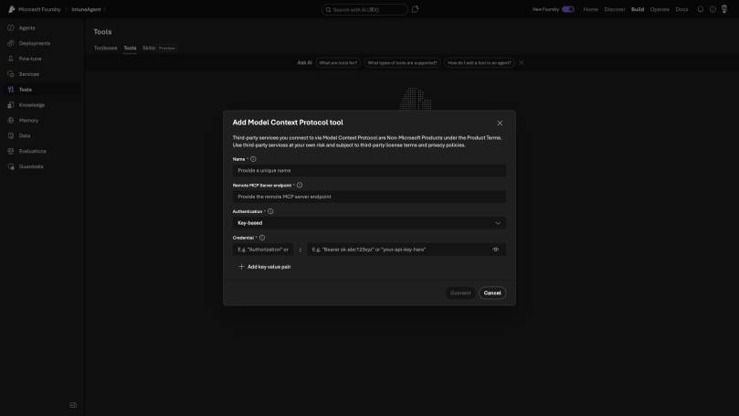
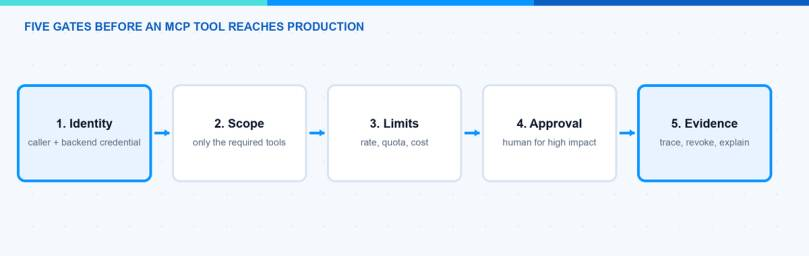
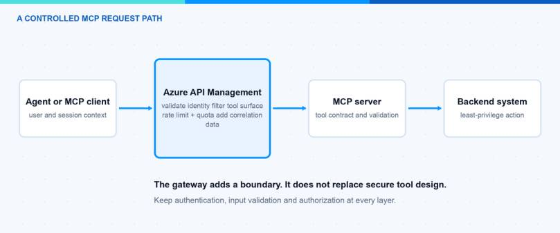

Connecting a Model Context Protocol server to an agent is easy. The difficult part starts when that connection can reach a real business system. For MCP tool production, I want five gates to pass before the first user can rely on it: identity, scope, limits, approval and evidence. In this blog post I explain what I check at each gate and where Azure API Management can help.
This is not a generic zero-trust checklist. It is the practical review I would use for an MCP tool that reads or changes enterprise data. The goal is simple: every call should have an accountable caller, a narrow permission, a controlled impact and enough evidence to explain what happened.
MCP gives agents a standard way to discover and call tools. That solves an important integration problem, but it does not decide who should be allowed to call a tool, which backend permission is appropriate or how an administrator can stop a runaway workflow.
The screenshot below shows the Microsoft Foundry dialog for adding a remote MCP tool. It asks for the endpoint and authentication details. This is the connection layer. A production review has to continue beyond this screen.

Microsoft documents Azure API Management as a way to expose and govern MCP servers. It can validate tokens, apply policies, limit requests and send telemetry to Azure Monitor. I like this pattern because it creates one enforceable boundary between clients and enterprise tools. It is still only one part of the design.
Note: A gateway does not repair an unsafe tool. The MCP server and backend must still validate input and enforce authorization.

1. Identity — Who Is Really Calling?
The first question is not whether authentication works. The first question is which identity is visible at every hop.
I separate three identities:
- The human or workload that starts the request.
- The agent or application that calls the MCP endpoint.
- The identity that reaches the backend system.
These identities may be different, but the relationship between them must be traceable. A shared API key may be useful during a small test. It is weak evidence in production because every call looks the same. Where possible, I prefer Microsoft Entra ID, short-lived tokens and an explicit audience for the MCP endpoint.
The outbound identity matters just as much. If API Management or the MCP server uses one powerful backend credential for every user, the gateway becomes the only authorization boundary. That can be acceptable for a narrow read-only tool, but it is risky for actions such as deleting records or changing device configuration.
Hint: Write the identity path down before configuring anything. If one arrow in the diagram has no owner, the design is not ready.
Many MCP servers expose more tools than one agent needs. A client may discover the full tool list even when its task uses only one operation. I treat the visible tool surface like an application permission set: smaller is easier to understand and easier to monitor.
For each agent I document:
- the allowed MCP server;
- the exact tools it needs;
- whether each tool is read-only or changes state;
- the data boundary behind the tool;
- the owner who approves a scope change.
Azure API Management products can package MCP servers and use the existing subscription and approval workflow. Microsoft also documents product-level quotas and rate limits for MCP servers in Govern MCP servers with API Management products. Products are useful for distribution, but the MCP server should still reject operations the caller is not authorized to perform.
3. Limits — What Stops a Loop?
Agents retry. Workflows branch. A small mistake can turn one user request into many tool calls. Limits therefore have to exist before usage grows.
I normally define two kinds of boundary:
- Short-window rate limits protect the service from bursts and loops.
- Long-window quotas keep one client or subscription from consuming the entire budget.
The counter key should represent the boundary I care about. This may be a subscription, an application identity, a tenant or a JWT claim. A global counter is simple, but one noisy consumer can block everyone else.
Cost limits also belong here. A tool call may trigger an expensive database query, a long-running automation or another model call. Counting only MCP requests can hide the real cost. Microsoft notes that API Management can use an LLM token limit on the backing API when token consumption is part of the path.
4. Approval — Which Actions Need a Person?
Not every tool call needs approval. If every read requires a click, users will avoid the system. I reserve human approval for actions with a meaningful blast radius.
Typical examples are:
- sending a message outside the organization;
- changing security or compliance settings;
- deleting or overwriting data;
- creating a cost commitment;
- executing against many users or devices.
The approval decision needs context. The reviewer should see the requested action, the target, the reason and the expected impact. An approval prompt that only says “Allow tool?” is not enough.
I also decide what happens when approval is not available. A safe workflow stops. It should not silently switch to a more privileged credential or find another tool that reaches the same backend.
5. Evidence — Can I Trace and Revoke Every Call?
The final gate is evidence. I need to connect a user request to the agent run, the selected tool, the backend call and the result. Without that chain, troubleshooting becomes guesswork.
Azure API Management emits MCP-specific telemetry for tool discovery and tool calls when connected to Application Insights. Microsoft lists dimensions such as the MCP session, client, tool name, service and error information in Monitor MCP server traffic. Custom correlation data can be added with a trace policy.
There is an important privacy trade-off. Tool arguments and results may contain personal or confidential information. Payload logging should therefore be a deliberate choice with access control and retention, not a default checkbox.
Evidence also includes a tested revocation path. I want to know how to disable the client, rotate its secret, block the MCP server and revoke the backend permission. A control that has never been tested is only a plan.
Where Does Azure API Management Fit?

API Management sits well at the shared boundary. It can enforce inbound authentication, transform or remove headers, apply rate limits, group access through products and send telemetry to Azure Monitor.
I would not put every responsibility into one policy file. My preferred split is:
| Layer | Main responsibility |
|---|---|
| Agent or client | User context, tool choice and approval experience |
| Azure API Management | Shared authentication, policy, limits and correlation |
| MCP server | Tool contract, input validation and tool-level authorization |
| Backend | Final data authorization and business rules |
| Monitoring platform | Detection, investigation, retention and alerts |
This separation keeps one mistake from removing every protection at once.
What Is My MCP Production Checklist?
Before release I ask the owner to answer these questions:
- Can we name the human or workload behind each call?
- Does the agent see only the tools and data it needs?
- Are rate limits, quotas and cost boundaries defined per consumer?
- Do high-impact actions require useful human approval?
- Can we trace a request without logging unnecessary sensitive data?
- Can we block and revoke the integration in minutes?
- Has the failure path been tested, not only the happy path?
If one answer is unclear, I keep the tool in a pilot environment. MCP makes the connection easier. It does not reduce the responsibility that comes with connecting an agent to a production system.
For the technical gateway setup, see my related guide Azure API Management MCP: The Control Plane for Agent Tools.
I hope this is a little help when you review your next MCP integration.
Stay healthy, Cheers Jannik